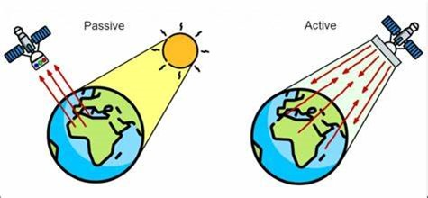
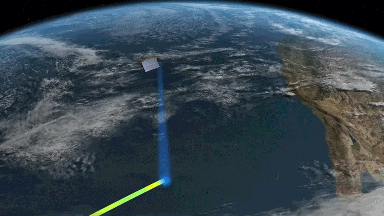
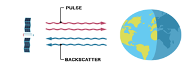
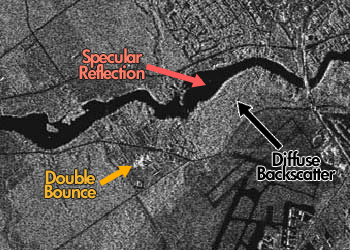
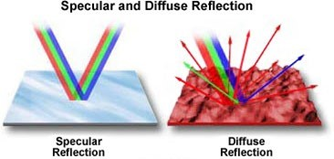
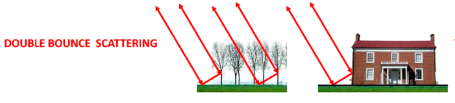

.png)
Table of contents |
|---|
This paper presents a novel adaptive active learning strategy. The most accurate classification model from a heterogeneous classifier pool is selected at each learning epoch. Our goal is to achieve greater incremental improvement in accuracy, compared to using a single type of classification model throughout the process. The strategy is evaluated on benchmark data sets. We further consider an application to texture classification problems in sonar mosaic imagery and compare it with non-adaptive active learning and traditional machine learning approaches. Our results show that...We conclude that...
Ever since the first satellite has been launched into space in 1957 (Nasa, No date), satelites have been integrated into our lives from helping us forecast our weather to monitoring deforestation (EVONA, 2023) .Satellites allow us to measure the earths features at a completely different angle, instead of from the surface of the earth or by planes in the sky. This advantage allows measurements to be taken from remote areas where it can be difficult to collect data, such as the pacific ocean, or the Sahara desert(geoimage, 2023). We can use this data to measure features of the earth such as land height or rates of deforestation.
Remote sensing is a way of recording something without physically touching it from a distance (GISGeography,2023). Satellites orbiting the earth are also equipped with remote sensing equipment, which have two fundamental techniques of collecting data; Active and Passive remote sensing. Active remote sensing works by illuminating a target by sending a pulse of light or radiation, and measuring the backscatter reflected to the sensor as shown in figure X and figure X. Whereas passive remote sensing is where the receiver measures natural radiation such as light, Infrared or radiation emitted of objects, as seen on figure X (GISGeography,2023). Take a camera for example; cameras capture light reflected of an object then uses this to create an image, this illustrates the concept of passive remote sensing (GISGeography,2023).  <-Figure X: Passive and active remote sensing(Hameed, 2022)  <-Figure X: Active Remote sensing (Jet Propultion Laboratory, 2020)
Remote sensing is a way of recording something without physically touching it from a distance
(GISGeography,2023).
Satellites can collect data in two fundamental methods, Active or Passive remote sensing.
Active remote sensing is where a satellite transmits radiation (usually electromagnetic) to a point of interest,
then receives the radiation. Whereas passive remote sensing is where the receiver captures backscattered radiation
such as light, Infrared or radiation, then uses this to create an image of an object. Take a camera for example;
cameras capture light reflected of an object then uses this to create an image. An advantage of passive remote sensing
would be that it is able to create coloured images, a disadvantage would be that no images would be created if there is
no radiation to receive, this can happen when its dark. Also, if there are clouds or particulates in the air, the
quality of the image would be affected. Active remote sensing allows data to be recorded regardless of the daylight or
cloud coverage. However, as active remote sensing sends and receives its own radiation, this allows satellites to record
data day and night, which is why Synthetic-Aperture Radar (SAR) is commonly used in satellites. (Amos Gikunda, 2021).
When a satellite with active remote sensing technology emits a pulse of radiation towards a target the radiation reflected
back is known as backscattered radiation (Figure 4),

<- Backscattered Radiation (GISER,2022)
there can be three main types of measurements of backscattered radiation (GISGeography,2023):
• Specular reflection
• Diffuse scattering
• Double Bounce
Specular reflection can be detected in areas of darkness in the image shown in figure 1. In this case the radiation has reflected on a
smooth surface, such as rivers or paved surfaces, leading too little to no radiation being sent back to the sensor as
the radiation is reflected a completely different direction relative to the sensor as shown on Figure X (GISGeography,2023).
Diffuse scattering is where the radiation hits a ridged surface causing the radiation to spread out randomly leading to
random variations of radiation being sent back to the sensor as seen on figure 2. These random variations could indicate areas with dense
vegetation (Figure 1) (GISGeography,2023). A bright spot indicates a double bounce backscatter as shown in Figure X which
is the condition where the most amount of radiation is reflected directly back to the sensor; this characteristic is usually
found when measuring urban areas with lots of buildings (Figure 1).

<- Figure X: Double Bounce, Specular Reflection, Diffuse Scatter (GISGeography,2023)

<- Figure X Specular and Diffuse reflection (Micheal W.Davidson, 2015)

<-Figure 3: Double Bounce Scattering (Blasco et al,2020)
The fundamental principle of any radar imaging technique is to send electromagnetic waves towards a surface and record the amount of signal that backscatters
back, and its time delay (NISAR, no date).
SAR refers to a technique used for producing images by bouncing microwaves of an object (ASF,2023) from an airborne airplane,
unmanned aircraft or spacecraft (NISAR, no date). SAR uses active remote sensing which allows data to be collected on a 24-hour
basis, and for data to be recorded in all kinds of weather (Tsokas et all, 2022).
Figure X illustrates the usage of images created via SAR to find areas of deforestation by detecting shadows
left by trees (Bouvet et al,2018). As the satellite approaches a border moving from west to east between a forested area and
a non-forested area, a shadow appears at that border. As the satellite continues moving towards the other side of the deforested patch, from east to west,
shadows can be formed at the border between them, two opposing lines of shadows can be used to estimate the area of the deforested patch as shown in
Figure X (Bouvet et al,2018).
Conclusion
References
ASF (2023). SAR: The Power Tool of Remote Sensing. Available at: What is SAR? | Alaska Satellite Facility (Accessed: 27/11/2023).Blasco et al,(2020) Effects on The Double Bounce Detection in Urban Areas Based on SAR Polarimetric Characteristics. Available at: Remote Sensing | Free Full-Text | Effects on the Double Bounce Detection in Urban Areas Based on SAR Polarimetric Characteristics (mdpi.com) (Accessed: 25/11/23)Bouvet et al (2018). Use of SAR Shadowing Effect for Deforestation Detection with Sentinel-1 Time Series. Available at: Remote Sensing | Free Full-Text | Use of the SAR Shadowing Effect for Deforestation Detection with Sentinel-1 Time Series (mdpi.com) (Accessed: 27/11/2023)EVONA (2023). THE UNSEEN IMPACT OF SATELLITES ON OUR DAILY LIVES. Available at:The Unseen Impact of Satellites on Our Daily Lives | EVONA (Accessed 28/11/2023)Geoimage (2023) The advantages of satellite imagery compared to other alternatives. Available at The advantages of satellite imagery compared to other alternatives | Geoimage (Accessed: 31/10/23)GISGeography (2023) What is Remote sensing? The Definitive Guide. Accessed at 15/11/23.>GISER (2022). What is Remote Sensing? The Definitive Guide. Available at: What is Remote Sensing? The Definitive Guide - GIS开发者 (giserdqy.com) (Accessed: 22/11/2023)Hameed, A.N.A.H (2022). Passive and Active Remote Sensing System. Available at: 4): Passive and Active Remote Sensing System,[16]. | Download Scientific Diagram (researchgate.net)( Accessed: 27/11/2023)Jet Propulsion Laboratory (2020). U.S.-European Sentinel-6 Sea Level Satellite Gears Up for Launch. Available: https://scitechdaily.com/u-s-european-sentinel-6-sea-level-satellite-gears-up-for-launch/ (Accessed: 03/12/2023)Michael W.Davidson,(2015) Reflection of light. Available at: Molecular Expressions: Science, Optics, and You: Light and Color - Reflection of Light (fsu.edu) (Accessed: 22/11/2023)NASA (No date). Sputnik and the Dawn of the Space Age. Available at: NASA | History - Sputnik (Accessed: 26/11/2023).NISAR (No date). NASA – ISRO SAR MISSION. Available at: Overview | Get to Know SAR – NASA-ISRO SAR Mission (NISAR) (Accessed: 25/11/2023)